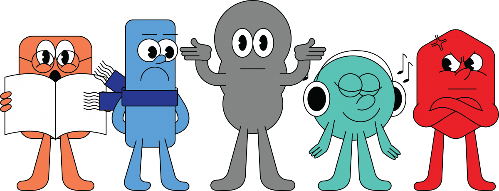
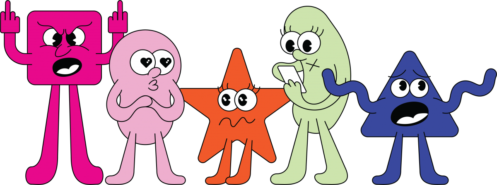
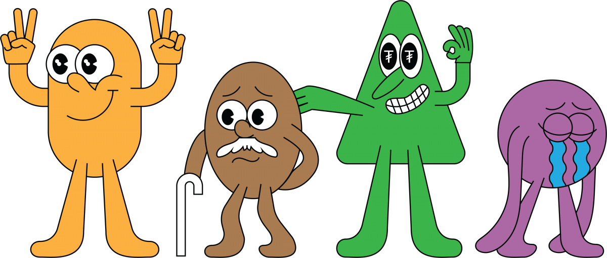

Креатив директор:
Ж.Тэмүүжин
Монголчууд бидний амьдрал хэрхэн өрнөж, бид нэг өдөрт юу хийж бүтээж
байна вэ? Үндэсний Статистикийн хорооноос
“Цаг ашиглалтын судалгаа 2023” (ЦАС)-ыг
гаргасантай холбогдуулан бид уг судалгаанаас онцлох 20 үр дүнг
хуваалцаж байна. Өнөөдөр залуу мэргэжилтнүүдийн дийлэнх цаг хугацаа
юунд зарцуулагдаж, хоногийн 24 цагийг хэрхэн өнгөрүүлж буйг доорх
баримтуудаас харах боломжтой. Дөрвөн жил тутам олон нийтэд
танилцуулдаг уг судалгаанд энэ удаа улсын хэмжээнд 23394 өрх, 9427
эмэгтэй, 7814 эрэгтэй хамрагджээ.
Сонирхуулахад “Цаг ашиглалтын судалгаа” нь хүн амын амьдралын хэв
маягаас гадна эмэгтэйчүүд, эрэгтэйчүүдийн нийгэм, эдийн засаг, өрх
гэрт оруулж буй хувь нэмрийг тодорхойлоход ашиглагддаг мэдээллийн
чухал эх үүсвэрүүдийн нэг юм. Дэлхийн 85 улс 1966 оноос хойш ЦАС-г
зохион байгуулж буй бөгөөд Монгол Улс анх 2000 онд НҮБ-ын Хөгжлийн
Хөтөлбөрийн санхүү, техникийн тусламжтайгаар 1086 өрхийг хамруулан
хийж байсан түүхтэй.
51 хувь
Монгол хүн өдрийн 24 цагийн 51 хувийг зайлшгүй хувийн хэрэгцээнд, 33.8 хувийг хөдөлмөр эрхлэхэд, 15.1 хувийг боловсрол болон чөлөөт цагтаа зарцуулж байна.
25-39 нас
Бид 25-39 насандаа хамгийн идэвхтэй хөдөлмөр эрхэлдэг буюу өдөрт дунджаар 5 цаг 59 минутыг хөлстэй хөдөлмөрт зарцуулж байна.
15 цаг 14 минут
Дээд боловсролтой хүн өдөрт дунджаар 15 цаг 14 минутыг өөрийгөө хөгжүүлэх болон хувийн хэрэгцээндээ зарцуулдаг.
8-10 цаг
25-39 насны хүн ам хамгийн их илүү цагаар ажилладаг буюу тэдний 18.7 хувь нь өдөрт 8-10 цаг (долоо хоногт 56-70 цаг), 15.1 хувь нь өдөрт 10-12 цаг (долоо хоногт 70-84 цаг), 10.8 хувь нь 12 цагаас дээш (долоо хоногт 84 цагаас дээш) цагийг хөлстэй хөдөлмөр эрхлэхэд зарцуулсан.
4 цаг 35 минут
3 ба түүнээс дээш хүүхэдтэй хүн хүүхэдгүй хүнээс 1.8 дахин илүү илүү буюу 4 цаг 35 минутыг хөлсгүй хөдөлмөрт зарцуулж байна.
8 цаг 13 минут
Эмэгтэйчүүд эрэгтэйчүүдээс илүү хөдөлмөрлөдөг, гэхдээ хөлсгүй. Тодруулбал, эрэгтэйчүүд долоо хоногийн нэг өдөрт дунджаар 7 цаг 59 минутыг, эмэгтэйчүүд дунджаар 8 цаг 13 минутыг хөдөлмөр эрхлэхэд зарцуулж байна.
4.9 дахин их
Өдөрт дунджаар 1 цаг 58 минутыг олон нийтийн мэдээллийн хэрэгсэл ашиглахад зарцуулдаг ба энэ нь хобби, спорт, соёлын үйл ажиллагаанд зарцуулсан цагаас 4.9 дахин их юм.
44.6 хувь
Эрэгтэйчүүдийн өдрийн дундаж хөдөлмөр эрхэлсэн цагийн 71.6 хувь нь хөлстэй хөдөлмөр бол эмэгтэйчүүдийн хөдөлмөр эрхэлсэн нийт цагийн тал хүрэхгүй хувь буюу 44.6 хувь нь хөлстэй хөдөлмөр байна.
97.4 хувь
Нийт хүн амын 97.4 хувь нь биет байдлаар ном, сонин, сэтгүүл уншихад цаг зарцуулаагүй байна.
24 минут
Хүмүүстэй харилцах, олон нийтийн арга хэмжээнд оролцоход өдөрт дунджаар 24 минутыг тусгайлан зориулжээ.
32 минут
Боловсролын үйл ажиллагаа буюу суралцахад өдөрт дунджаар 32 минут зарцуулж байна.
3 минут
Ном, сонин, сэтгүүл уншихад зарцуулсан цагийг ялгаж харвал ердөө 3 минут байна.
1 цаг 58 минут
Чөлөөт цаг, урлаг, спортын үйл ажиллагаанд зарцуулсан нийт цагийн 72.8 хувь буюу дунджаар 1 цаг 58 минутыг олон нийтийн мэдээллийн хэрэгсэлд зориулжээ.
10 минутаас бага
12 ба түүнээс дээш насны хүн амын 90 хувь нь дасгал хөдөлгөөнд өдөрт 10 минутаас бага цаг зарцуулдаг.
20 минутаас дээш
Эмэгтэйчүүдийн 9 хувь нь өдөрт дунджаар 20 минутаас их хугацааг, эрэгтэйчүүдийн 8 хувь нь өдөрт 20 минутаас дээш хугацааг дасгал хөдөлгөөн хийхэд зориулдаг.
1 цаг 35 минут
Улаанбаатар хотод өдөр бүр дунджаар 1 цаг 35 минут буюу хамгийн их цагийг явах, зорчиход зарцуулж байна.
7-10 цагийн хооронд
Өглөөний цайгаа ихэнх хүн 7-10 цагийн хооронд уудаг.
30.2 хувь
Оройны 21 цагт хүн амын 30.2 хувь олон нийтийн мэдээллийн хэрэгсэл ашиглаж байгаа нь хамгийн өндөр хандалттай цаг.
Шөнийн 2 цагт
Хүн амын 66.6 хувь нь 23 цагт, 87 хувь нь шөнийн 00 цагт, 92.9 хувь нь шөнийн 01 цагт, 96.0 хувь нь шөнийн 2 цаг гэхэд унтсан байдаг.
10 цаг 22 минут
Унтах, амрахад 12-17 насны хүүхдүүд өдөрт дунджаар 10 цаг 22 минут, 60 ба түүнээс дээш насныхан 10 цаг 28 минут зарцуулж байна. Харин 18-24 насанд 9 цаг 54 минут, 25-39 насанд 9 цаг 6 минут, 40 ба түүнээс дээш насанд 9 цаг 7 минутыг унтахад зарцуулжээ.
Хандалт / Сэтгэгдэл: